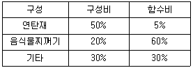
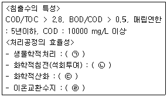
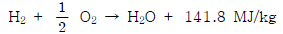

폐기물처리기사 (2016-05-08 기출문제)
1과목: 폐기물 개론
1. 1년 연속 가동하는 폐기물 소각시설의 저장용량을 결정하고자 한다. 폐기물 수거인부가 주 5일, 일 8시간 근무할 때 필요한 저장시설의 최소 용량은? (단, 토요일 및 일요일을 제외한 공휴일에도 폐기물 수거는 시행된다고 가정한다.)
- 1일 소각용량 이하
- 1 ~ 2일 소각용량
- 2 ~ 3일 수거용량
- 3 ~ 4일 수거용량
(정답률: 89%)

2. 적환 및 적환장에 관한 내용으로 알맞지 않은 것은?
- 수송차량 종류에 따라 직접적환, 간접적환, 저장적환으로 구분할 수 있다.
- 적환을 시행하는 주된 이유는 폐기물 운반거리가 연장되었기 때문이다.
- 적환장 설계 시 사용하고자 하는 적환작업의 종류, 용량 소요량, 환경요건 등을 고려하여야 한다.
- 적환장 설치장소는 수거하고자 하는 개별적 고형물 발생지역의 하중중심에 되도록 가까운 곳에 설치한다.
(정답률: 81%)
3. 폐기물의 수거 및 운반 시 중계소의 설치가 필요한 경우가 아닌 사항은?
- 처리장이 멀리 떨어져 있을 경우
- 압축식 수거 시스템인 경우
- 수거차량이 대형인 경우
- 쓰레기 수송 비용절감이 필요한 경우
(정답률: 87%)
4. 쓰레기의 분석결과가 다음과 같을 때 함수비(%)는?

- 18.5
- 23.5
- 24.7
- 26.5
(정답률: 81%)
5. 폐기물의 발생량을 추정하는 방법으로 가장 거리가 먼 것은?
- 재생 또는 재활용 되는 양에 의하여 추정한다.
- 발생량을 직접 측정한다.
- 원자재의 사용량으로부터 추정한다.
- 주민의 수입이나 매상고와 같은 2차적인 자료로 추정한다.
(정답률: 70%)
6. 쓰레기 발생량이 5백만 톤/년인 지역의 수거인부의 하루 작업시간이 10시간이고, 1년의 작업일수는 300일이며, 수거효율(MHT)은 1.8로 운영되고 있다면 필요한 수거인부의 수(명)는?
- 3000
- 3100
- 3200
- 3300
(정답률: 81%)
7. 해안매립공법에 대한 설명으로 가장 거리가 먼것은?
- 순차투입공법은 호안측에서부터 쓰레기를 투입하여 순차적으로 육지화하는 방법이다.
- 수중투기공법은 고립된 매립지 내의 해수를 그대로 둔 채 쓰레기를 투기하는 매립방법이다.
- 해안매립공법은 매립작업이 연속적인 투입방법으로 이루어지므로 완전한 샌드위치 방식의 매립에 적합하다.
- 박층뿌림공법은 밑면이 뚫린 바지선 등으로 쓰레기를 박층으로 떨어뜨려 뿌려줌으로써 바닥지반의 하중을 균등하게 해주는 방법이다.
(정답률: 74%)
8. 쓰레기 수집방법 중 pipe-line 방식에 관한 설명으로 가장 거리가 먼 것은?
- 고장 및 긴급사고 발생에 대한 대처방법이 필요하다.
- 쓰레기 발생 빈도가 낮아야 현실성이 있다.
- 장거리 수송이 곤란하다.
- 가설 후 경로변경이 곤란하고 설치비가 높다.
(정답률: 84%)
9. 수분이 96%인 슬러지를 수분 60%로 탈수했을 때, 탈수 후 슬러지의 체적(m3)은? (단, 탈수 전 슬러지의 체적은 500 m3)
- 30
- 50
- 70
- 90
(정답률: 77%)
10. 폐기물 관리의 우선순위를 순서대로 나열한 것은?
- 에너지회수-감량화-재이용-재활용-소각-매립
- 재이용-재활용-감량화-에너지회수-소각-매립
- 감량화-재이용-재활용-에너지회수-소각-매립
- 소각-감량화-재이용-재활용-에너지회수-매립
(정답률: 86%)
11. 쓰레기를 소각했을 때 남은 재의 중량은 쓰레기의 30%이다. 쓰레기 10ton을 태웠을 때 남은 재의 부피가 2m3라고 하면 재의 밀도(ton/m3)는?
- 1.0
- 1.5
- 2.0
- 2.5
(정답률: 80%)
12. 도시폐기물을 원소 분석한 결과일 때 이 도시폐기물의 저위발열량(kcal/kg)은? (단, C = 24%, H =3%, O = 10%, S = 0.5%, 수분 = 15%)
- 252
- 756
- 2299.5
- 2551.5
(정답률: 75%)
13. 스크린상에서 비중이 다른 입자의 층을 통과하는 액류를 상하로 맥동시켜서 층의 팽창수축을 반복하여 무거운 입자는 하층으로 가벼운 입자는 상층으로 이동시켜 분리하는 중력분리 방법은?
- Secators
- Jigs
- Melt separation
- Air stoners
(정답률: 80%)
14. 쓰레기 배출량을 추정하는 방법으로 시간만 고려하는 방법과 시간을 단순히 하나의 독립적인 종속 인자로 고려하는 방법의 문제점을 보완할 수 있도록 고안된 것은?
- 시간상관모델
- 다중회귀모델
- 동적모사모델
- 경향법
(정답률: 54%)
15. 쓰레기를 압축시켜 부피감소율이 55%인 경우 압축비는?
- 약 2.2
- 약 2.8
- 약 3.2
- 약 3.6
(정답률: 73%)
16. 쓰레기의 용적을 감소시키는 방법이 아닌 것은?
- 압축
- 매립
- 소각
- 열분해
(정답률: 86%)
17. 쓰레기 파쇄(shredding)에 대한 설명으로 가장 거리가 먼 것은?
- 압축 시 밀도증가율이 크므로 운반비가 감소된다.
- 조대쓰레기에 의한 소각로의 손상을 방지해 준다.
- 곱게 파쇄하면 매립 시 복토요구량이 증가된다.
- 파쇄에 의한 물질별 분리로 고순도의 유가물 회수가 가능하다.
(정답률: 73%)
18. 수송설비를 하수도처럼 개설하여 각 가정의 쓰레기를 최종 처리처분장까지 운반할 수 있으나, 전력비, 내구성 및 미생물의 부착 등이 문제가 되는 쓰레기 수송방법은?
- Monorail 수송
- Container 수송
- Conveyer 수송
- 철도수송
(정답률: 80%)
19. 트롬멜 스크린에 관한 설명으로 틀린 것은?
- 회전속도는 임계속도 이상으로 운전할 때가 최적이다.
- 선별효율이 좋고 유지관리상의 문제가 적다.
- 경사도가 크면 효율도 떨어지고 부하율도 커지며 대개 2~3° 정도이다.
- 길이가 길면 효율은 증진된 동력소모가 많다.
(정답률: 85%)
20. 도시쓰레기 중 가연성 쓰레기를 선별하여 분쇄한 후 250℃ 정도로 가열하고 길이 1m, 지름 15cm정도로 만든 연료는?
- RDF
- Shredder
- Pyrolysis
- Composting
(정답률: 83%)
2과목: 폐기물 처리 기술
21. 화강암에서 유래된 토양의 용적밀도가 1.4g/cm3이었다면 공극률(%)은? (단, 입자의 밀도는 2.85 g/cm3이다.)
- 42
- 46
- 51
- 58
(정답률: 74%)
22. 시멘트 고형화법 중 자가시멘트법에 대한 설명으로 가장 거리가 먼 것은?
- 혼합율이 낮고 중금속 저지에 효과적이다.
- 탈수 등 전처리와 보조에너지가 필요하다.
- 장치비가 크고 숙련된 기술을 요한다.
- 연소가스 탈황 시 발생된 슬러지처리에 사용된다.
(정답률: 68%)
23. 총고형물 중 유기물이 60% 이고 함수율이 98%인 슬러지를 소화조에 100 m3/day 투입하여 30일 소화시켰더니 유기물의 2/3가 가스화 또는 액화하여 함수율 90%인 소화 슬러지가 얻어졌다고 한다. 소화 후 슬러지량(m3)은? (단, 슬러지의 비중 1.0)
- 8
- 12
- 16
- 20
(정답률: 72%)
24. 퇴비화의 장점과 가장 거리가 먼 것은?
- 운영시에 소요되는 에너지가 낮다.
- 다른 폐기물처리 기술에 비해 고도의 기술수준을 요구하지 않는다.
- 생산된 퇴비의 비료가치가 높다.
- 초기의 시설투자비가 낮다.
(정답률: 84%)
25. 매립지에서 침출된 침출수 농도가 반으로 감소하는데 5년 걸렸다면 이 침출수 농도의 90%가 감소하는데 걸리는 시간(년)은? (단, 1차 반응 기준)
- 약 14.7
- 약 16.6
- 약 18.2
- 약 19.1
(정답률: 77%)
26. 함수율 97%의 슬러지를 농축하였더니 부피가 처음 부피의 1/3로 줄어들었다. 이때 농축슬러지의 함수율(%)은? (단, 비중은 1.0 기준)
- 95
- 93
- 91
- 89
(정답률: 74%)
27. 총고형물이 36500 mg/L, 휘발성 고형물이 총고형물 중 64.5%인 폐기물 100 m3/day를 혐기성 소화조에서 소화시켰을 때 1일 가스 발생량(m3/day)은? (단, 폐기물 비중 1.0, 가스발생량 0.35 m3/kg(VS))
- 약 764
- 약 784
- 약 804
- 약 824
(정답률: 61%)
28. 도시에서 1일 쓰레기 발생량이 200톤이다. 이를 trench 법으로 매립하는데 압축에 따른 부피감소율이 40% 이고, trench의 깊이가 2.5m라면 1년간 매립부지면적(m2)은? (단, 발생쓰레기 밀도 600 kg/m3, 도랑 점유율 60% 이다.)
- 약 42667
- 약 44667
- 약 46667
- 약 48667
(정답률: 56%)
29. 3785m3/일 규모의 하수처리장의 유입수의 BOD와 SS농도가 각각 200 mg/L 라고 하고, 1차 침전에 의하여 SS는 60%, 이에 따라 BOD도 30% 제거된다. 후속처리인 활성슬러지공법(폭기조)에 의해 남은 BOD의 90%가 제거되며 제거된 kgBOD당 0.2 kg의 슬러지가 생산된다면 1차 침전에서 발생한 슬러지와 활성슬러지공법에 의해 발생된 슬러지량의 총합(kg/일)은? (단, 비중은 1.0 기준, 기타 조건은 고려 안함)
- 약 530
- 약 550
- 약 570
- 약 590
(정답률: 52%)
30. 침출수의 특성이 다음과 같을 때 처리공정의 효율성 연결이 순서대로 나열된 것은?

- ㉠ 양호, ㉡ 양호, ㉢ 불량, ㉣ 불량
- ㉠ 양호, ㉡ 불량, ㉢ 불량, ㉣ 양호
- ㉠ 양호, ㉡ 불량, ㉢ 양호, ㉣ 양호
- ㉠ 양호, ㉡ 불량, ㉢ 불량, ㉣ 불량
(정답률: 65%)
31. Crystallinity가 증가할수록 합성차수막에 나타내는 성질이라 볼 수 없는 것은?
- 인장강도 증가
- 열에 대한 저항성 증가
- 화학물질에 대한 저항성 증가
- 투수계수의 증가
(정답률: 79%)
32. BOD 농도 15000 mg/L인 생분뇨를 투입하여 1차 소화를 거친 다음, 30배 희석한 후 2차 처리를 하여 방류수 BOD 농도를 27 mg/L로 하고자 한다. 1차 소화조에서의 BOD 제거율이 65%, 희석수의 BOD 농도가 4 mg/L라면 2차 처리장치에서의 BOD제거율(%)?
- 약 55
- 약 65
- 약 75
- 약 85
(정답률: 43%)
33. 매립지에 쓰이는 합성차수막의 재료별 장단점에 관한 설명으로 틀린 것은?
- PVC : 가격은 저렴하나 자외선, 오존, 기후에 약하다.
- HDPE : 온도에 대한 저항성이 높으나 접합상태가 양호하지 못하다.
- CSPE : 산과 알칼리에 특히 강하나 기름, 탄화수소 및 용매류에 약하다.
- CPE : 강독 높으나 방향족탄화수소 및 기름종류에 약하다.
(정답률: 57%)
34. 초산(CH3COOH)과 포도당(C6H12O6)을 각각 1몰씩 혐기성 소화 하였을 때 양론적 메탄발생량을 비교한 것으로 옳은 것은?
- 포도당 1몰 혐기성소화시, 초산 1몰 혐기성소화시보다 메탄발생량은 2배 많다.
- 포도당 1몰 혐기성소화시, 초산 1몰 혐기성소화시보다 메탄발생량은 3배 많다.
- 포도당 1몰 혐기성소화시, 초산 1몰 혐기성소화시보다 메탄발생량은 4배 많다.
- 포도당 1몰 혐기성소화시, 초산 1몰 혐기성소화시보다 메탄발생량은 6배 많다.
(정답률: 80%)
35. 수분함량이 90%인 슬러지를 수분함량 60%로 낮추기 위해 톱밥을 첨가하였다면 슬러지 톤당 소요되는 톱밥의 양(kg)은? (단, 비중 1.0, 톱밥의 수분함량 20%라 가정함)
- 650
- 750
- 850
- 950
(정답률: 63%)
36. 진공여과기로 슬러지를 탈수하여 cake의 함수율을 80%로 할 때 여과속도는 20 kg/m2·h(고형물 기준), 여과면적은 50m2의 조건에서 5시간 동안의 cake 발생량(ton)은? (단, 비중은 1.0으로 가정한다.)
- 약 10
- 약 15
- 약 20
- 약 25
(정답률: 42%)
37. 매립지의 총면적은 100 km2이고 연간 평균 강수량이 1100 mm가 될 때 그 매립지에서 침출수로의 유출률이 0.6이었다고 한다. 이 때 침출수의 일 평균처리 계획 수량(m3/day)은? (단, 강우강도 대신에 평균 강수량으로 계산)
- 약 171000
- 약 181000
- 약 191000
- 약 201000
(정답률: 63%)
38. 토양오염처리방법인 Air Sparging의 적용 조건에 관한 설명으로 틀린 것은?
- 오염물질의 용해도가 높은 경우에 적용이 유리하다.
- 자유면 대수층 조건에서 적용이 유리하다.
- 오염물질의 호기성 생분해능이 높은 경우에 적용이 유리하다.
- 토양의 종류가 사질토, 균질토일 때 적용이 유리하다.
(정답률: 63%)
39. 연직차수막 공법의 종류가 아닌 것은?
- Earth Dam 코어 공법
- 지하연속벽 공법
- 강널말뚝 공법
- Grout 공법
(정답률: 68%)
40. 고형물 4.2%를 함유한 슬러지 150000 kg을 농축조로 이송한다. 농축조에서 농축 후 고형물의 손실 없이 농축슬러지를 소화조로 이송할 경우 슬러지의 무게가 70000 kg 이라면 농축된 슬러지의 고형물 함유율(%)은? (단, 슬러지 비중은 1.0으로 가정함)
- 6.0
- 7.0
- 8.0
- 9.0
(정답률: 58%)
3과목: 폐기물 소각 및 열회수
41. 매시간 4 ton의 폐유를 소각하는 소각로에서 발생하는 황산화물을 접촉산화법으로 탈황하고 부산물로 50%의 황산을 회수한다면 회수되는 부산물량(kg/hr)은? (단, 폐유 중 황성분 3%, 탈황율 95%라 가정함)
- 약 500
- 약 600
- 약 700
- 약 800
(정답률: 53%)
42. 도시생활폐기물을 대상으로 하는 소각방법에 많이 이용되는 형식이 아닌 것은?
- Stoker type incinerator
- Multiple hearth incinerator
- Rotary kiln incinerator
- Fluidizes bed incinerator
(정답률: 68%)
43. 소각로의 소각능률이 170 kg/m2 · hr 이며 쓰레기의 양이 20000 kg/일이다. 1일 8시간 소각하면 화격자 면적(m2)은?
- 약 7.2
- 약 10.4
- 약 12.4
- 약 14.7
(정답률: 68%)
44. 소각로 화격자에서 고온부식은 국부적으로 연소가 심한 장소에서 화격자의 온도가 상승함에 따라 발생한다. 방식대책으로 틀린 것은?
- 화격자의 냉각률을 올린다.
- 공기주입량을 줄여 화격자의 과열을 막는다.
- 부식되는 부분에 고온공기를 주입하지 않는다.
- 화격자의 재질을 고 크롬, 저 니켈강으로 한다.
(정답률: 74%)
45. 소각 시 탈취방법 중 직접연소법에 관한 설명으로 가장 거리가 먼 것은?
- 유독성가스의 제거법으로 사용하며 촉매 사용없이 직접연소하는 방법이다.
- 연소장치 설계 시 오염물의 폭발한계점 또는 인화점을 잘 알아야 한다.
- 오염물의 발열량이 연소에 필요한 전체열량의 50% 이상일 때 경제적으로 타당하다.
- 반응속도가 낮은 경우 장치의 대형화로 인하여 부식 등 관리문제가 있다.
(정답률: 37%)
46. 아래 반응은 수소의 연소반응식이다. 여기서, 141.8 MJ/kg을 가장 적절하게 표현한 것은?

- 수소의 흡수열이다.
- 수소의 고위 발열량이다.
- 수소의 저위 발열량이다.
- 수소의 비열이다.
(정답률: 56%)
47. 폐기물 소각, 매립 설계과정에서 중요한 인자로 작용하고 있는 강열감량(Ignition Loss)에 대한 설명으로 틀린 것은?
- 소각로의 운전상태를 파악할 수 있는 중요한 지표
- 소각로의 종류, 처리용량에 따른 화격자의 면적을 선정하는 데 중요자료
- 소각잔사 중 가연분을 중량 백분율로 나타낸 수치
- 폐기물의 매립처분에 있어서 중요한 지표
(정답률: 67%)
48. 수분이 적고 저위발열량이 높은 폐기물에 적합하며 폐기물의 이송방향과 연소가스 흐름방향이 같은 소각방식은?
- 향류식
- 병류식
- 교류식
- 복류식
(정답률: 65%)
49. 연소장치에서 공기비가 큰 경우에 나타나는 현상과 가장 거리가 먼 것은?
- 연소실에서 연소온도가 낮아진다.
- 배기가스 중 질소산화물량이 증가한다.
- 불완전연소로 일산화탄소량이 증가한다.
- 통풍력이 강하여 배기가스에 의한 열손실이 크다.
(정답률: 62%)
50. 다이옥신의 로내 제어 방법이 맞는 것은?
- 온도는 300 ~ 400℃ 유지
- 연소가스는 400℃ 이하에서 연소실 체류시간 2초 이상 유지
- 2차 공기 공급에 의한 미연분의 완전연소
- O2의 농도를 25 ~ 30%로 지속 유지
(정답률: 51%)
51. 저위발열량 10000 kcal/kg의 중유를 연소시키는 데 필요한 이론공기량(Sm3/kg)은? (단, Rosin식 적용)
- 8.5
- 10.5
- 12.5
- 14.5
(정답률: 57%)
52. 중유연소에서 보일러의 경우, 배가스 중의 CO2농도 범위는?
- 1 ~ 3 %
- 5 ~ 8 %
- 11 ~ 14 %
- 16 ~ 20 %
(정답률: 57%)
53. 물질의 연소특성에 대한 설명으로 가장 거리가 먼 것은?
- 탄소의 착화온도는 800℃ 이다.
- 황의 착화온도는 장작의 경우보다 낮다.
- 수소의 착화온도는 장작의 경우보다 높다.
- 용광로가스의 착화온도는 700 ~ 800 ℃ 부근이다.
(정답률: 65%)
54. 열분해방법 중 산소 흡입 고온 열분해법의 특징에 대한 설명으로 가장 거리가 먼 것은?
- 폐플라스틱, 폐타이어 등의 열분해시설로 많이 사용된다.
- 분해온도는 높지만 공기를 공급하지 않기 때문에 질소산화물의 발생량이 적다.
- 이동바닥로의 밑으로부터 소량의 순산소를 주입, 노내의 폐기물 일부를 연소, 강열시켜 이 때 발생되는 열을 이용해 상부의 쓰레기를 열분해한다.
- 폐기물을 선별, 파쇄 등 전처리과정을 하지 않거나 간단히 하여도 된다.
(정답률: 50%)
55. 고위발열량이 16820 kcal/Sm3인 에탄(C2H6)을 연소시킬 때 이론 연소온도(℃)는? (단, 이론습연소 가스량 21 Sm3/Sm3, 연소가스 정압 비열 0.63kcal/Sm3 ·℃, 연소용공기, 연료온도는 15℃, 공기는 예열하지 않으며, 연소가스는 해리되지 않음)
- 약 1132
- 약 1154
- 약 1178
- 약 1196
(정답률: 59%)
56. 소각로에 폐기물을 투입하는 1시간 중에 투입작업시간을 40분, 나머지 20분은 정리시간과 휴식시간으로 한다. 크레인 바켓트 용량 4m3, 1회에 투입하는 시간을 120초, 바켓트로 폐기물을 짚었을 때 용적중량은 최대 0.4 ton/m3으로 본다면 폐기물의 1일 최대 공급능력(ton/day)은? (단, 소각로는 24시간 연속가동)
- 524
- 684
- 768
- 874
(정답률: 57%)
57. 에탄(C2H6)의 이론적 연소 시 부피기준 AFR(air-fuel ratio, mols air/mol fuel)는?
- 약 10.5
- 약 12.5
- 약 14.2
- 약 16.7
(정답률: 56%)
58. 다단로 소각로의 설명으로 틀린 것은?
- 다단로 소각로는 건조영역, 연소 및 탈취 영역, 연소 및 탈취 영역, 냉각영역으로 나눌 수 있다.
- 물리, 화학적 성분이 다른 각종 폐기물을 처리할 수 있다.
- 분진발생율이 높다.
- 단계적 온도반응으로 보조연료이용 조절이 용이하다.
(정답률: 71%)
59. 이론공기량을 산정하는 방법과 가장 거리가 먼것은?
- 원소조성에 의한 방법
- 발열량에 의한 방법
- 실측치에 의한 방법
- 셀룰로오스 치환법에 의한 방법
(정답률: 49%)
60. 유동층 소각로방식에 대한 설명으로 틀린 것은?
- 반응시간이 빨라 소각시간이 짧다. (로 부하율이 높다.)
- 기계적 구동부분이 많아 고장율이 높다.
- 폐기물의 투입이나 유동화를 위해 파쇄가 필요하다.
- 가스온도가 낮고 과잉공기량이 적어 NOx도 적게 배출된다.
(정답률: 66%)
4과목: 폐기물 공정시험기준(방법)
61. 자외선/가시선 분광광도계에서 사용하는 흡수셀의 준비사항으로 가장 거리가 먼 것은?
- 흡수셀은 미리 깨끗하게 씻은 것을 사용한다.
- 흡수셀의 길이(L)를 따로 지정하지 않았을 때는 10 mm 셀을 사용한다.
- 시료셀에는 실험용액을, 대조셀에는 따로 규정이 없는 한 정제수를 넣는다.
- 시료용액의 흡수파장이 약 370 nm 이하일 때는 경질유리 흡수셀을 사용한다.
(정답률: 74%)
62. 흡광광도법에서 투과도가 0.24일 경우 흡광도는?
- 0.32
- 0.42
- 0.52
- 0.62
(정답률: 62%)
63. 원자흡광분석에서 검량선작성법에 해당 되지 않는 것은?
- 검량선법
- 표준첨가법
- 검량표준법
- 내부표준법
(정답률: 60%)
64. 다음 시약 제조 방법 중 틀린 것은?
- 1N-NaOH 용액은 NaOH 42g을 물 950 mL에 넣어 녹이고 새로 만든 수산화바륨용액(포화)을 침전이 생기지 않을 때까지 한 방울씩 떨어뜨려 잘 섞고 마개를 하여 24시간 방치한 다음 여과하여 사용한다.
- 1N-HCl 용액은 염산(35% 이상) 120 mL를 물에 넣어 1000 mL로 한다.
- 20 W/V%-KI(비소시험용) 용액은 KI 20g을 물에 녹여 100 mL로 하며 사용할 때 조제한다.
- 2N-H2SO4 용액은 황산(95.0% 이상) 60 mL를 물 1 L 중에 섞으면서 천천히 넣어 식힌다.
(정답률: 58%)
65. 수은의 원자흡수분광광도법(원자흡광광도법)에 관한 시험방법으로 옳은 것은?
- 시료에 이염화주석을 넣어 금속수은으로 환원시킨다.
- 시료에 아연을 넣어 수은증기를 발생시킨다.
- 정량계는 0.⑤ mg/L 이다.
- 벤젠 등 휘발성 유기물질의 방해를 방지하기 위해 염산으로 분해시킨 후 시험한다.
(정답률: 53%)
66. 기름성분을 노말헥산추출시험방법에 따라 정량할 때 분석시료의 pH 범위는?
- 염산(1+1)을 넣어 pH 4 이하로 조절한다.
- 염산(1+1)을 넣어 pH 6 이하로 조절한다.
- 수산화나트륨(1+1)을 넣어 pH 8 이상으로 조절한다.
- 수산화나트륨(1+1)을 넣어 pH 10 이상으로 조절한다.
(정답률: 52%)
67. 0.1N-AgNO3 규정액 1mL는 몇 mg의 NaCl과 반응하는가? (단, 분자량은 AgNO3 169.87, NaCl 58.5 이다.)
- 0.585
- 5.85
- 58.5
- 585
(정답률: 67%)
68. 기체크로마토그래피의 검출기 중 인 또는 유황 화합물을 선택적으로 검출할 수 있는 것으로 운반가스와 조연가스의 혼합부, 수소공급구, 연소노즐, 광학필터, 광전자 증배관 및 전원 등으로 구성된 것은?
- TCD(Thermal Conductivity Detector)
- FID(Flame Ionization Detector)
- FPD(Flame Photometric Detector)
- FTD(Flame Thermionic Detector)
(정답률: 86%)
69. 흡광광도법에서 자외부 파장부분을 사용할 경우에 해당되지 않는 것은?
- 중소소 방전관 광원을 사용한다.
- 플라스틱제 흡수셀을 사용한다.
- 측광부에는 광전자증배관을 사용한다.
- 파장선택부로는 모노크로메타를 사용한다.
(정답률: 77%)
70. 자외선/가시선 분광법에 의한 크롬 분석에 관한 내용으로 가장 거리가 먼 것은?
- 과망간산칼륨으로 크롬이온 전체를 6가 크롬으로 산화시킨다.
- 알칼리성에서 다이페닐카바자이드와 반응하여 생성되는 적자색의 착화합물의 흡광도를 540 nm에서 측정한다.
- 시료 중 철이 2.5 mg 이하로 공존할 경우에는 다이페닐카바자이드용액을 넣기 전에 피로인산나트륨 · 10수화물용액(5%) 2mL를 넣어 주면 간섭을 줄일 수 있다.
- 정량범위는 0.002 ~ 0.⑤ mg 범위이다.
(정답률: 49%)
71. 총칙에서 규정하고 있는 용기에 대한 설명으로 옳은 것은?
- 기밀용기라 함은 기체 또는 미생물이 침입하지 아니하도록 내용물을 보호하는 용기를 말한다.
- 밀봉용기라 함은 이물이 들어가거나 또는 내용물이 손실되지 아니하도록 보호하는 용기를 말한다.
- 밀폐용기라 함은 공기 또는 다른 가스가 침입하지 아니하도록 내용물을 보호하는 용기를 말한다.
- 차광용기라 함은 내용물이 광화학적 변화를 일으키지 아니하도록 방지할 수 있는 용기를 말한다.
(정답률: 74%)
72. 시료의 전처리 방법으로 많은 시료를 동시에 처리하기 위하여 회화에 의한 유기물 분해 방법을 이용하고자 하며, 시료 중에는 염화칼슘이 다량 함유되어 있는 것으로 조사되었다. 아래 보기 중 회화에 의한 유기물분해 방법이 적용 가능한 중금속은?
- 납(Pb)
- 철(Fe)
- 안티몬(Sb)
- 크롬(Cr)
(정답률: 67%)
73. 휘발성 저급염소화 탄화수소류를 기체크로마토그래피로 정량하는 방법에 관한 설명으로 틀린 것은?
- 시료 중 트리클로로에틸렌 및 테트라클로로에틸렌을 헥산으로 추출하여 기체크로마토그래피법으로 정량한다.
- 휘발성 저급염소화 탄화수소류는 휘발성이 높기 때문에 시료를 채취할 때 유리제 용기에 상부공간이 없도록 채취하여야 한다.
- 트리클로로에틸렌의 정량한계는 0.008 mg/L, 테트라클로로에틸렌의 정량한계는 0.002 mg 이다.
- FID(수소염이온화검출기) 또는 HECD(전해전도검출기)를 주로 사용한다.
(정답률: 60%)
74. 흡광도의 눈금을 보정하기 위하여 사용되는 시약은?
- 과망간산칼륨을 N/20 수산화나트륨용액에 녹여 사용
- 과망간산칼륨을 N/20 수산화칼륨용액에 녹여 사용
- 중크롬산칼륨을 N/20 수산화나트륨용액에 녹여 사용
- 중크롬산칼륨을 N/20 수산화칼륨용액에 녹여 사용
(정답률: 45%)
75. 용출시험법 중 시료용액의 조제에 관한 설명으로 옳은 것은?
- 용매의 pH는 5.8 ~ 6.3으로 조절한다.
- 시료와 용매의 비율은 1:20(W/V)의 비로 한다.
- 시료와 용매를 1000 mL 삼각플라스크에 넣어 혼합한다.
- 용매의 pH를 조절하기 위해 질산을 사용한다.
(정답률: 69%)
76. K2Cr2O7을 사용하여 1000 mg/L의 Cr 표준원액 100 mL를 제조하려면 필요한 K2Cr2O7의 양(mg)은? (단, 원자량은 K=39, Cr=52, O=16이다.)
- 141
- 283
- 354
- 565
(정답률: 60%)
77. 함수량이 90%인 시료를 용출시험하여 분석한 결과, 카드뮴의 함량이 5 ppm 이었다. 수분함량을 보정하여 계산하면 카드뮴의 함량(ppm)은?
- 5.5
- 7.5
- 10.5
- 12.5
(정답률: 59%)
78. 공정시험방법에서의 용출시험방법 중 진탕회수와 진탕시간으로 적절한 것은?
- 진탕회수 : 매분당 약 100회,
진탕시간 : 4시간 연속 - 진탕회수 : 매분당 약 200회,
진탕시간 : 6시간 연속 - 진탕회수 : 매분당 약 300회,
진탕시간 : 8시간 연속 - 진탕회수 : 매분당 약 400회,
진탕시간 : 10시간 연속
(정답률: 73%)
79. 노말헥산 추출시험방법에 의한 유분함량측정시 증발용기는 실리카겔 데시케이터에 넣고 정확히 얼마 동안 방냉한 후 무게를 다는가?
- 30분
- 1시간
- 3시간
- 5시간
(정답률: 74%)
80. 회화에 의한 유기물 분해시 회화로의 가열온도로서 적당한 것은?
- 200 ~ 300 ℃
- 300 ~ 400 ℃
- 400 ~ 500 ℃
- 500 ~ 600 ℃
(정답률: 58%)
5과목: 폐기물 관계 법규
81. 기술관리인의 자격 · 기술관리 대행계약 등에 관한 필요한 사항은 무엇으로 정하는가?
- 시 · 도지사령
- 유역환경청장령
- 환경부령
- 대통령령
(정답률: 56%)
82. 폐기물처리시설을 사용종료하거나 폐쇄하고자 하는 자는 사용종료, 폐쇄신고서에 폐기물처리시설사후관리계획서(매립시설에 한함)를 첨부하여 제출하여야 한다. 다음 중 폐기물처리시설사후관리계획서에 포함될 사항과 가장 거리가 먼 것은?
- 지하수 수질조사계획
- 구조물 및 지반 등의 안정도 유지계획
- 빗물배제계획
- 사후 환경영향평가 계획
(정답률: 60%)
83. 주변지역 영향 조사대상 폐기물처리시설(폐기물 처리업자가 설치, 운영하는 시설)기준으로 옳은 것은?
- 매립면적 3만 제곱미터 이상의 사업장 일반폐기물 매립시설
- 매립면적 5만 제곱미터 이상의 사업장 일반폐기물 매립시설
- 매립면적 10만 제곱미터 이상의 사업장 일반폐기물 매립시설
- 매립면적 15만 제곱미터 이상의 사업장 일반폐기물 매립시설
(정답률: 77%)
84. 폐기물의 국가간 이동 및 그 처리에 관한 법률은 폐기물의 수출 · 수입 등을 규제함으로써 폐기물의 국가간 이동으로 인한 환경오염을 방지하고자 제정되었는데, 관련된 국제적인 협약은?
- 기후변화협약
- 바젤협약
- 몬트리올의정서
- 비엔나협약
(정답률: 88%)
85. 특정시설에서 발생되는 지정폐기물 중 오니류에 대한 설명으로 가장 알맞은 것은?
- 수분함량이 85퍼센트 미만이거나 고형물함량이 15퍼센트 이상인 것
- 수분함량이 90퍼센트 미만이거나 고형물함량이 10퍼센트 이상인 것
- 수분함량이 95퍼센트 미만이거나 고형물함량이 5퍼센트 이상인 것
- 수분함량이 99퍼센트 미만이거나 고형물함량이 1퍼센트 이상인 것
(정답률: 64%)
86. 폐기물의 수집 · 운반 · 보관 · 처리에 관한 구체적 기준 및 방법에 관한 설명으로 옳지 않은 것은?
- 사업장일반폐기물배출자는 그의 사업장에서 발생하는 폐기물을 보관이 시작되는 날부터 90일을 초과하여 보관하여서는 아니된다.
- 지정폐기물(의료폐기물 제외) 수집 · 운반차량의 차체는 노란색으로 색칠하여야 한다.
- 음식물류 폐기물 처리시 가열에 의한 건조에 의하여 부산물의 수분함량을 50% 미만으로 감량하여야 한다.
- 폐합성고분자화합물은 소각하여야 하지만, 소각이 곤란한 경우에는 최대지름 15센티미터 이하의 크기로 파쇄 · 절단 또는 용융한 후 관리형 매립시설에 매립할 수 있다.
(정답률: 53%)
87. 지정폐기물(의료폐기물은 제외)의 보관창고에 보관 중인 지정폐기물의 종류, 보관가능 용량, 취급 시 주의사항 및 관리책임자 등을 적은 후 설치하는 표지판 표지의 색깔로 옳은 것은?
- 녹색 바탕에 빨간색 선 및 빨간색 글자
- 녹색 바탕에 노란색 선 및 노란색 글자
- 노란색 바탕에 검은색 선 및 검은색 글자
- 노란색 바탕에 청색 선 및 청색 글자
(정답률: 88%)
88. 기술관리인을 두어야 할 폐기물처리시설 기준으로 틀린 것은? (단, 폐기물 처리업자가 운영하는 폐기물처리시설 제외)
- 시멘트 소성로
- 사료화, 퇴비화 또는 연료화 시설로서 1일 처분 능력이 10톤 이상인 시설
- 소각시설로서 시간당 처분능력이 600 킬로그램(의료폐기물을 대상으로 하는 소각시설의 경우에는 200 킬로그램) 이상인 시설
- 용해로(폐기물에서 비철금속을 추출하는 경우로 한정한다.)로서 시간당 재활용능력이 600킬로그램 이상인 시설
(정답률: 67%)
89. 환경부령이 정하는 양 이상의 지정폐기물을 배출하는 자가 당해 지정폐기물을 처리하기 전에 환경부장관의 확인을 받기 위해 제출하여야 하는 서류가 아닌 것은?
- 배출자의 폐기물처리계획서(수집 · 운반자가 확인을 받아야 하는 경우는 수집 · 운반자의 것)
- 폐기물인계서
- 폐기물분석결과서(환경부령이 정하는 폐기물분석전문기관의 것)
- 처리를 위탁받은 처리자의 수탁확인서
(정답률: 62%)
90. 변경허가를 받지 아니하고 폐기물처리업의 허가 사항을 변경한 자에게 주어지는 벌칙은?
- 2년 이하의 징역 또는 2000만원 이하의 벌금
- 3년 이하의 징역 또는 3000만원 이하의 벌금
- 5년 이하의 징역 또는 5000만원 이하의 벌금
- 7년 이하의 징역 또는 7000만원 이하의 벌금
(정답률: 56%)
91. 다음 중 시장 · 군수 · 구청장(지방자치단체인구의 구청장)의 책무와 가장 거리가 먼 것은?
- 지정폐기물의 적정처리를 위한 조치강구
- 폐기물처리시설 설치 · 운영
- 주민과 사업자의 청소의식 함양
- 폐기물의 수집 · 운반 · 처리방법의 개선 및 관계인의 자질향상
(정답률: 40%)
92. 폐기물처리 신고자의 준수사항으로 옳은 것은?
- 정당한 사유 없이 계속하여 1년 이상 휴업하여서는 아니 된다.
- 정당한 사유 없이 계속하여 2년 이상 휴업하여서는 아니 된다.
- 정당한 사유 없이 계속하여 3년 이상 휴업하여서는 아니 된다.
- 정당한 사유 없이 계속하여 5년 이상 휴업하여서는 아니 된다.
(정답률: 75%)
93. 위해의료폐기물의 종류 중 시험, 검사 등에 사용된 배양액, 배양용기, 보관균주, 폐시험관, 슬라이드, 커버글라스, 폐배지, 폐장갑이 해당되는 것은?
- 생물 · 화학 폐기물
- 손상성 폐기물
- 병리계 폐기물
- 조직물류 폐기물
(정답률: 77%)
94. 다음 중 광역폐기물처리시설 설치 · 운영의 수탁자 범위에 포함되지 않는 것은?
- 환경관리공단
- 한국환경자원공사
- 지방자치법에 따른 지방자치단체조합으로서 폐기물의 광역처리를 위하여 설립된 조합
- 해당 광역폐기물처리시설을 시공한 자(그 시설의 운영을 위탁하는 경우에만 해당한다)
(정답률: 29%)
95. 폐기물 배출자 변경신고 대상이 아닌 것은?
- 상호 또는 사업장의 소재지를 변경한 경우
- 대상사업장의 수 및 대상폐기물의 종류가 변경된 경우(공동처리하는 경우는 제외)
- 신고한 사업장폐기물의 월 평균 배출량이 100분의 50이상 증가한 경우
- 사업장폐기물의 종류별 처리계획을 변경한 경우(폐기물의 처리방법이 동일한 경우로서 처리장소만을 변경한 경우는 제외)
(정답률: 26%)
96. 폐기물처리시설 중 중간처리시설인 기계적 처리 시설에 대한 기준으로 옳지 않은 것은?
- 절단시설(동력 20마력 이상인 시설로 한정한다.)
- 압축시설(동력 10마력 이상인 시설로 한정한다.)
- 멸균 · 분쇄시설
- 연료화 시설
(정답률: 40%)
97. 폐기물처리 기본계획에 포함되어야 하는 사항과 가장 거리가 먼 것은?
- 재원의 확보 계획
- 폐기물의 처리 현황과 향후 처리 계획
- 폐기물의 감량화와 재활용 등 자원화에 관한 사항
- 폐기물의 종류별 관리 여건 및 전망
(정답률: 59%)
98. 환경부 장관이 수립하는 폐기물관리 종합계획에 포함되어야 하는 사항과 가장 거리가 먼 것은?
- 종합계획 평가 전망
- 부분별 폐기물 관리 정책
- 종합계획의 기조
- 재원 조달 계획
(정답률: 50%)
99. 지정폐기물 종류에 관한 설명으로 틀린 것은?
- 폐산 : 액체상태의 폐기물로서 수소이온농도지수가 2.0 이하인 것에 한한다.
- 폐농약 : 농약의 제조, 판매업소에서 발생되는 것에 한한다.
- 광재 : 철광원석의 사용으로 인한 고로슬래그에 한한다.
- 환경부령이 정하는 물질이 함유된 분진 : 대기오염방지시설에서 포집된 것에 한하되 소각시설에서 발생되는 것은 제외한다.
(정답률: 54%)
100. 폐기물관리법에서 적용하는 용어의 뜻으로 가장 거리가 먼 것은?
- 폐기물감량화시설 : 생산 공정에서 발생하는 폐기물의 양을 줄이고, 사업장 내 재활용을 통하여 폐기물 배출을 최소화하는 시설로서 대통령령으로 정하는 시설을 말한다.
- 지정폐기물 : 사업장 폐기물 중 사람의 건강과 재산 및 주변환경에 위해를 주는 물질이 포함된 폐기물로 대통령령으로 정하는 폐기물을 말한다.
- 사업장폐기물 : 대기환경보전법, 수질 및 수생태계 보전에 관한 법률 또는 소음 · 진동관리법에 따라 배출시설을 설치 · 운영하는 사업장이나 그 밖에 대통령령으로 정하는 사업장에서 발생하는 폐기물을 말한다.
- 폐기물처리시설 : 폐기물의 중간처리시설과 최종처리시설로서 대통령령으로 정하는 시설을 말한다.
(정답률: 39%)
만약 저장용량이 1일 소각용량 이하라면, 매일매일 폐기물을 소각시켜도 1주일 동안 수거한 폐기물을 모두 처리할 수 없다.
만약 저장용량이 1~2일 소각용량이라면, 1주일 동안 수거한 폐기물을 처리하기 위해서는 매일매일 폐기물을 소각시켜야 하므로, 일부 시간에는 폐기물을 수거하지 못할 가능성이 있다.
따라서 저장용량은 2~3일 수거용량 이상이어야 한다. 이 경우, 매일매일 폐기물을 소각시키지 않아도 1주일 동안 수거한 폐기물을 모두 처리할 수 있으며, 일부 시간에도 폐기물을 수거할 수 있다.
만약 저장용량이 3~4일 수거용량 이상이라면, 폐기물이 충분히 저장될 시간이 있으므로, 저장용량이 더 크게 설정될 필요가 없다. 따라서 최소 용량은 2~3일 수거용량이 된다.